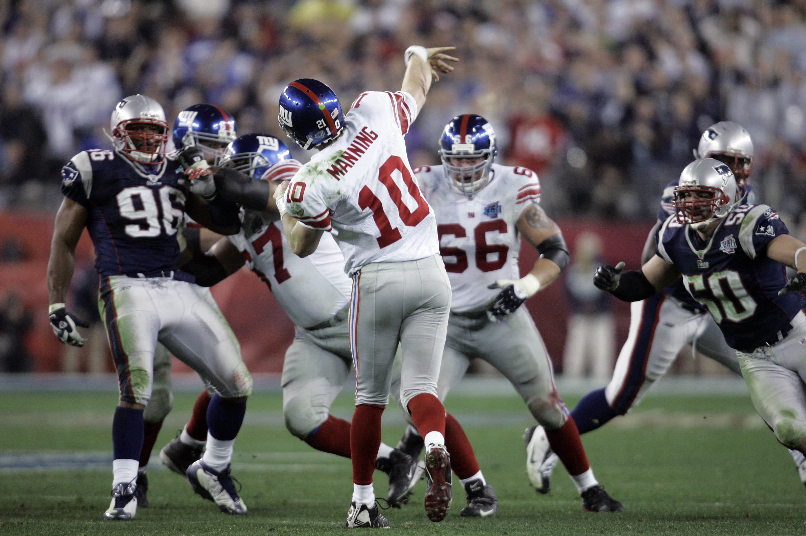
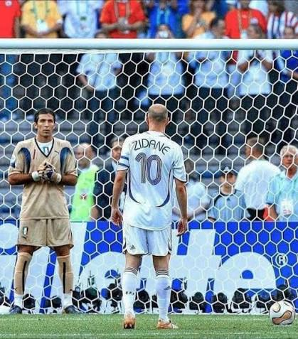
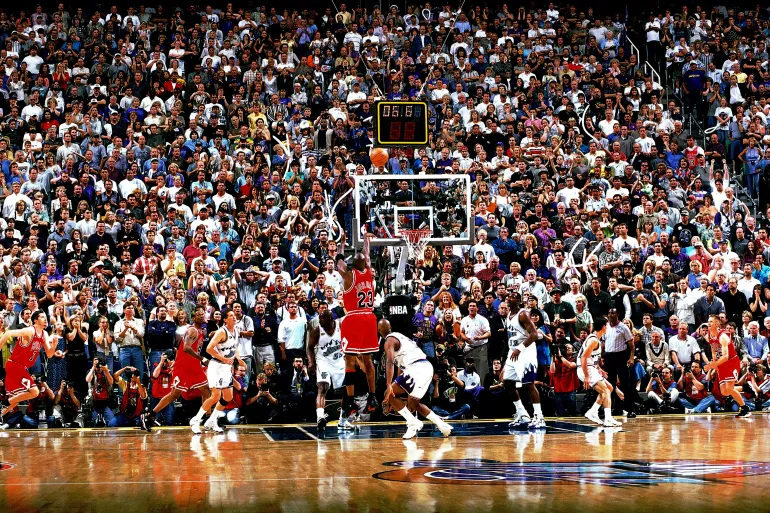

Three moments. Zero margin for error.
You'll get twenty seconds to read what's actually happening — then six seconds per decision. Miss the clock, and you're already gone.
Take the field
Moment — Super Bowl XLVI, Feb 5, 2012
Fourth quarter, under four minutes left. Giants trail the Patriots 17–15. The ball is on your own 12-yard line — behind you, nothing but your own end zone. Ahead, a defense that knows exactly what's coming, and a season on the line. Get this offense down the field, however it takes.
ContinueSuper Bowl XLVI
The pocket is collapsing fast. What's your decision?
Super Bowl XLVI
There's a gap in the defense, right through the middle. Do you take off?
Super Bowl XLVI
You've bought space downfield. What now?

Moment — World Cup Final, July 9, 2006
Seventh minute, Olympiastadion, Berlin. Your final match before retirement, and France has just been awarded a penalty. Gianluigi Buffon — arguably the best goalkeeper alive — is set on his line. 69,000 people have gone quiet. Whatever you decide in the next few seconds gets replayed forever.
ContinueWorld Cup Final
Which side do you choose?

Moment — NBA Finals Game 6, June 14, 1998
Delta Center, Salt Lake City. Under 20 seconds left, Bulls trail the Jazz by one — win, and it's a sixth championship. Karl Malone has the ball in the post. Everything you've built your career on comes down to the next few possessions.
ContinueNBA Finals Game 6
You need the ball back. What's the move?
NBA Finals Game 6
Bryon Russell is right on you. What's the move?
Whistle blows.
One hesitation, one wrong read — that's all it takes. Nobody in these moments got a second attempt. Neither do you.
Back to the tunnelFinal whistle.
Your throw found the sideline and kept the drive alive. Your chip cleared the crossbar and dropped in behind it. Your jumper rose over Russell and won it at the buzzer. Three of the biggest moments in sports history — and you called every one of them right, on the exact same clock they had.
Run it back